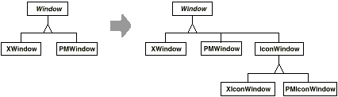
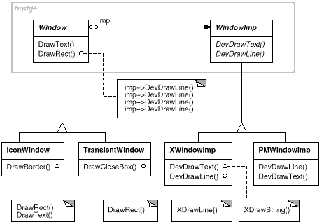
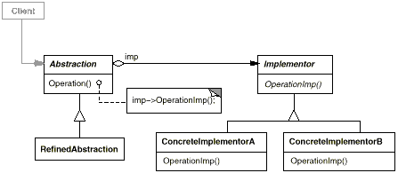

Handle& Handle::operator= (const Handle& other) {
other._body->Ref();
_body->Unref();
if (_body->RefCount() == 0) {
delete _body;
}
_body = other._body;
return *this;
}

class Window {
public:
Window(View* contents);
// requests handled by window
virtual void DrawContents();
virtual void Open();
virtual void Close();
virtual void Iconify();
virtual void Deiconify();
// requests forwarded to implementation
virtual void SetOrigin(const Point& at);
virtual void SetExtent(const Point& extent);
virtual void Raise();
virtual void Lower();
virtual void DrawLine(const Point&, const Point&);
virtual void DrawRect(const Point&, const Point&);
virtual void DrawPolygon(const Point[], int n);
virtual void DrawText(const char*, const Point&);
protected:
WindowImp* GetWindowImp();
View* GetView();
private:
WindowImp* _imp;
View* _contents; // the window's contents
};
class WindowImp {
public:
virtual void ImpTop() = 0;
virtual void ImpBottom() = 0;
virtual void ImpSetExtent(const Point&) = 0;
virtual void ImpSetOrigin(const Point&) = 0;
virtual void DeviceRect(Coord, Coord, Coord, Coord) = 0;
virtual void DeviceText(const char*, Coord, Coord) = 0;
virtual void DeviceBitmap(const char*, Coord, Coord) = 0;
// lots more functions for drawing on windows...
protected:
WindowImp();
};
class ApplicationWindow : public Window {
public:
// ...
virtual void DrawContents();
};
void ApplicationWindow::DrawContents () {
GetView()->DrawOn(this);
}
class IconWindow : public Window {
public:
// ...
virtual void DrawContents();
private:
const char* _bitmapName;
};
void IconWindow::DrawContents() {
WindowImp* imp = GetWindowImp();
if (imp != 0) {
imp->DeviceBitmap(_bitmapName, 0.0, 0.0);
}
}
void Window::DrawRect (const Point& p1, const Point& p2) {
WindowImp* imp = GetWindowImp();
imp->DeviceRect(p1.X(), p1.Y(), p2.X(), p2.Y());
}
class XWindowImp : public WindowImp {
public:
XWindowImp();
virtual void DeviceRect(Coord, Coord, Coord, Coord);
// remainder of public interface...
private:
// lots of X window system-specific state, including:
Display* _dpy;
Drawable _winid; // window id
GC _gc; // window graphic context
};
class PMWindowImp : public WindowImp {
public:
PMWindowImp();
virtual void DeviceRect(Coord, Coord, Coord, Coord);
// remainder of public interface...
private:
// lots of PM window system-specific state, including:
HPS _hps;
};
void XWindowImp::DeviceRect (
Coord x0, Coord y0, Coord x1, Coord y1
) {
int x = round(min(x0, x1));
int y = round(min(y0, y1));
int w = round(abs(x0 - x1));
int h = round(abs(y0 - y1));
XDrawRectangle(_dpy, _winid, _gc, x, y, w, h);
}
void PMWindowImp::DeviceRect (
Coord x0, Coord y0, Coord x1, Coord y1
) {
Coord left = min(x0, x1);
Coord right = max(x0, x1);
Coord bottom = min(y0, y1);
Coord top = max(y0, y1);
PPOINTL point[4];
point[0].x = left; point[0].y = top;
point[1].x = right; point[1].y = top;
point[2].x = right; point[2].y = bottom;
point[3].x = left; point[3].y = bottom;
if (
(GpiBeginPath(_hps, 1L) == false) ||
(GpiSetCurrentPosition(_hps, &point[3]) == false) ||
(GpiPolyLine(_hps, 4L, point) == GPI_ERROR) ||
(GpiEndPath(_hps) == false)
) {
// report error
} else {
GpiStrokePath(_hps, 1L, 0L);
}
}
WindowImp* Window::GetWindowImp () {
if (_imp == 0) {
_imp = WindowSystemFactory::Instance()->MakeWindowImp();
}
return _imp;
}